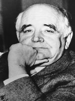

"A lettering box of lead letters,
albeit not much,
but nevertheless is the only thing man has so far
devised as a weapon for defending his human dignity."
Miroslav Krleža, Banquet in Blitvia
Miroslav Krleža, Croatian writer, (Zagreb, July 7, 1893 – Zagreb, December 29, 1981). He was the author of the most significant texts in the Croatian literature of the 20th century and the actuator of many cultural initiatives funded on the critical awareness of the Croatian society, which made his opus one of the central determinants in the building up of modern Croatia. Working in conditions of pronounced social division regarding fundamental problems of the community, he succeeded, though not avoiding conflicts, to shape his primary, aesthetic position as indubitable both for supporters and adversaries alike, so that the integrality of his work and thoughts was included in the crucial presumption of the national cultural standard.
Krleža comes from a middle-class family with some hereditary ancestry from northern Croatia, which helped him, despite his parents’ modest status, to receive substantial education and social basis. He completed the lower classes of the secondary school in Zagreb. In 1908 he went to the Cadet Academy in Pecz and in 1911 to the military academy Ludoviceum in Budapest. However, he left the academy as early as the year 1913; being preoccupied by the Balkan crisis, he attempted to reach Belgrade via Paris and Thessalonike. Without having a stronghold in Serbia he returned to Zagreb, started working in newspaper editorial boards, published his first literary contributions and became a professional writer. Towards the end of 1915 he was conscripted and in summer of the year 1916 sent to the battlefield in Galicia: due to illness he was released from military duty on the battlefield, so he returned to Zagreb at the end of 1917. He wrote comments on the state of affairs on the battlefields in the World War I and started publishing his first books; with a circle of peers, on the wave of general dissatisfaction and modest principles of social-democratic traditions, he started participating in the formation of the rudiments of the Croatian communist movement. Attempting from the very beginning to retain the gesture of the artist whose intention was, programmatically and truly fix though not arrange the world, in 1919, together with A. Cesarec, he initiated and edited the avant-garde journal Plamen [Flame], repudiating the myths of Croatian culture but also the so called Vidovdan complex, through which the real aspirations of Serbian politics were made clear. The journal was prohibited and Krleža was put under police custody that accompanied him all through to the establishment of the communist system in 1945. In the 1920s, theatres and publishers started accepting Krleža’s cooperation, so that both he and his wife Bela, after being given a permanent histrionic engagement at the end of the 1920s, became an eminent artist couple and their home, all through to their deaths, was an important spot of social life. Though Krleža’s work was distinctly defined by Zagreb, he was absent several times for longer periods: in the period from 1920 to 1921 he resided in the Ludbreg area, at the beginning of 1925 he resided several months in Russia; from January to September 1932 he was in Czechoslovakia and later in Warsaw and Paris; since autumn 1933 he tried to operate in Belgrade where in 1934 he launched the journal Danas [Today] together with M. Bogdanović. In Paris, in the period from 1949 to 1950 he prepared the exhibition on the Yugoslav medieval art. At the time of the Ustasha regime, from 1941 to 1945, he was first arrested and then in tacit house internment, supported by a circle of friends headed by the notable D. Vranešić.
Apart from artistic conception, Krleža was permanently preoccupied with literature as a cultural model. His journals Plamen, Književna republika [Literary republic] (1923-27), Danas and Pečat [Signet] (1939-1940) are orientation areas of Croatian Modernism; he participated in the initiation and defining of the direction of two most important literary journals of the second half of the 20th century, Republika [Republic] and Forum [Forum]. He continuously conducted critical discourse in newspapers and public forums, participated in the performance of his dramatic plays, particularly in the redaction and publishing of his works. In the course of his creative lifetime he published almost 200 author books. He initiated his first collection in 1923 with the publisher Vošicki in Koprivnica. Representative lines/series followed, starting with the Zagreb publishers Minerva and Biblioteka nezavisnih pisaca [Library of independent writers] in the 1930s and the attempt with the Suvremena naklada [Contemporary Edition] run by Josip Čaklović in summer of 1945. The following publications were the editions of Nakladni zavod Hrvatske [Croatian Publishing House] since 1946, collected works of Zora [Sunrise] starting in 1952 and, finally, collected works in 45 volumes with the additional five-volume Panorama pogleda, pojava i pojmova [Panorama of views, figures and concepts] released by the Sarajevo publisher Oslobođenje [Liberation] (1975-1988). Despite the fact that Krleža was an influential figure with a socially well known name and also the most translated Croatian writer of his time, the founder of the Lexicographic Institute (presently bearing his name) and promoter and editor-in-chief of a range of encyclopaedias, his complete/integral works were never published during his lifetime. Thereby his last will requested that the disposition of his manuscript legacy should be postponed for twenty years – which in greater extent preserved and processed in the National and University Library in Zagreb.
What is significant for the complexity of the typological analysis of Krleža’s work is his great genre encompassing and diffusing quality, the time plans of epochs and the appertaining stylistic formations – those he came out of and with which he was in a retrospective and kind of nostalgic dialogue. Likewise, in his relatively long cycle he tried to submit not only to the speculative but also the stylistic unity – developing the complex sentence into a syntactic rhythm of the Croatian standard without precedent in models and without proceedings for inheritance. Krleža entered literature in the customary way: entirely in the spirit of that time and cultural circumstances in his milieu he wanted to attract the attention by lyric and try to reach the drama stage. Even when in the figurative requisite or dramaturgic means this beginner’s gesture was provocative or too demanding for the expectation threshold, it strictly adhered to the criteria of ingrainedness and intelligibility, emphasizing its growth in the adequate growth of the concrete culture that modulated it. This means that Krleža’s work is sooner segmented into problem cycles than in genre cycles, and problems of lyric imposition and dramaturgic consistence are, as often as not, explicable only on the level of overall ambition. Developing the relation toward his subject, from avant-garde negation to encyclopaedic synthesis, Krleža structured an entire complex of diverging points, with an apparently clearly set up ideological basis, but mutually and as a whole dialogue-wise set up according to tradition and the great issues of history as general time before which the Croatian culture up to Krleža mainly used to have scruples.
Since the first published texts, the short plays Legenda [Legend] and Maskerata [Masquerade] (1914), narrative lyric fragments Zaratustra i mladić (1914) [Zarathustra and the Youth] and Podnevna simfonija [Midday Symphony] (1916), Krleža tried to loosen and smelt the genre frames. He published a total of eighteen dialogue-wise texts: Legenda, Maskerata, Hrvatska rapsodija [Croatian Rhapsody] (1917), Kraljevo [Feast of Kraljevo], Kristofor Kolumbo [Christopher Columbus] (1918), Michelangelo Buonarroti, U predvečerje [On the Eve] (1919), Galicia, Adam and Eve, Golgota [Golgotha] (1922), Vučjak [Wolfhound] (1923), Gospoda Glembajevi [The Glembaj Family] (1928), Leda (1932), U logoru [In the Camp] (1934), Aretheus (1959), Salome (1963), Put u raj [Road to Heaven] (1970). Indirectly one could assume, but also assert by directly accessing his legacy, that Krleža also worked on other dramaturgic patterns, some of which have been lost; in some of these examples he tested the dramaturgical, i.e. narrative profile of his texts, and some of the narrative, even essayistic texts were arranged for the stage – like the Banket u Blitvi [Banquet in Blitva], Zastave [The Banners] and Moj obračun s njima [My Reckoning with Them]. This does in no way change the crucial, conceptual or developmental conventions of his dramaturgy. Krleža’s theatre was shaped in numerous variants of his earlier texts, induced by the demands of the performance and the change of the receptive environment. His first artistic and symbolic visions (the legends) and likewise the social compositions with the veristic and expressionist poetic background Krleža based significantly earlier than they were shaped for the stage. The Glembaj cycle (U agoniji [In Agony], The Glembaj Family and Leda) manifested itself as stable, persuasive and formative on the level of the whole opus, conceived in the manner of an analytical drama of the “Nordic School”, with a range of moral breakdowns by which the historical and social fresco picture of the Zagreb bourgeois milieu is demystified and countervailed. As poet Krleža started from the principles of the Croatian Literary Modernism, with aesthetically characterized diction that soon kept developing into the worldview vitalism, which in the poems went furthest in terms of activism, under the general figure of “war lyric” but also advertised the Leninist dynamic. There are eleven collections that he wrote: Pan, Tri simfonije [Three Symphonies] (1917), Pjesme I [Poems I], Pjesme II [Poems II] (1918), Pjesme III [Poems III], Lirika [Lyric] (1919), Knjiga pjesama [Book of Poems] (1931), Knjiga lirike [Book of Lyric] (1932), Simfonije [Symphonies] (1933), Balade Petrice Kerempuha [Ballads of Petrica Kerempuh] (1936) and Pjesme u tmini [Poems in the Darkness] (1937). The thematic and stylistic circle as well as the verse and rhythm feeling spread a whole register of scanning that is considered to be completed in the artificial Ballads of Petrica Kerempuh, a shift from the standard in terms of language and culture, so that the latent steadfastness of the subject upon which Krleža insisted should be revealed.
The problem area of Krleža’s dramaturgy and lyric also includes the novelistic cycles. In the first, the so called “domobranski ciklus” (referring to the members of the home guard in the period between 1941-1945), structured in the collection Hrvatski bog Mars [Croatian God Mars] (1922, final redaction 1946), is an elaboration of the complex of Croatian soldiers’ suffering that in World War I reached fatalistic, absurd dimensions; in the second, “jakubinski ciklus” [Jacobinical cycle], Krleža was preoccupied with individuals who fail to overcome limitations of bourgeois environment (the collection Hiljadu i jedna smrt [A Thousand and One Deaths] was banned in 1933); the third, Glembaj cycle, includes eleven prose fragments with a situational and generic elaboration of the dramaturgical whole. Krleža’s narrative text in the 1920s, consistent with the tendencies in the European prose, developed from shorter types (Tri kavaljera frajle Melanije [Three Beaus of Miss Melania], 1922, Vražji otok [Devil’s Island], 1923) to the canonization of the novel which, in his central narrative work, the modern novel Povratak Filipa Latinovicza [The Return of Filip Latinovicz], (1932) – the story about an artist that penetrates the organic impotence of society and the cultural model – brings Croatian prose into simultaneous position (M. Proust, R Musil, R. M. Rilke). In his following novels: Na rubu pameti [On the Edge of Reason] (1938), Banket u Blitvi [Banquet in Blitva] (vol. I-III, the first book in 1938) and Zastave [The Banners] (vol. I – V, first book in 1962), Krleža produced hundreds of pages of chronicles about the Central-European cultural and political panorama, written in unfailing narrative and superior intellectual strategies. However, what remained as defined and a mainstay for the understanding and formativeness of his work were exactly the early 1930s, with the whole Glembaj complex, the novel The Return of Filip Latinovicz and The Ballads of Petrica Kerempuh. Krleža’s influence upon the Croatian society was exactly then reaching the peak, which was reflected especially in the greater, problematical, non-fictional, in wider sense essayistic part of his opus. Despite the fact that in Krleža’s opus it is rather difficult to separate structural levels, which is specifically expressed in the collection Izlet u Rusiju [Trip to Russia] (1926), with a travelogue connection but, in terms of theme a narrative and associative mosaic about the strictly personal experience of the Soviet Russia; it is exactly his studies of social and cultural controversy (Moj obračun s njima [My reckoning with Them], 1932; Deset krvavih godina [Ten Bloody Years], 1937; Dijalektički antibarbarus [Dialectical Antibarbarous, 1939) that brought about the conclusive discourse on the perspectives and maintenance of the Croatian society. Except writing on literature and art, Krleža also wrote about history, politics, philosophy and medicine, dedicating his time while working on the encyclopaedia, after 1950, to almost universal observation, partly published (in five volumes) in extensive abstracts (fragments and records) from diaries, i.e. extensive material of mostly raw encyclopaedic notes (marginalia lexicographica). His personal relations are reflected in his very encompassing and long-standing correspondence.
As opposed to his literary activities, in the judgement of which positive assessment is permanently distinctly prevailing, Krleža’s public, i.e. political activity induced fierce reactions and altercation. Since early youth he pleaded for the anti-imperialistic concept of the communist movement, whereat he saw the solution of the Croatian national issue in the federalism that was proclaimed by the Third International. Severance of the Croatian communist movement in the Yugoslav surroundings brought it into a sort of equidistance from the political practice of both the Left and the Right, so we can talk about his immediate social activity only after the establishment of the communist rule in the 1940s and the obtaining of Tito’s full trust after the year 1948, i.e. relinquishing the Stalin practice. In the period from 1918 to 1941 Krleža also tried to apply organized activity in Croatian cultural institutions and the communist movement, but this failed to result in obtaining influence while he acted publicly. In the social conditions of the so called people’s democracy he participated in the establishing and stabilizing of many traditional and new institutions and programmes: Writers’ Society, The Academy, Croatian Matrix, Lexicographic Institute, National Heritage Protection in Zadar, protection of the right to the dignity of art (Speech at the Writers’ Congress in Ljubljana, 1952), interceding on the behalf of the free development of the Croatian language (support of the Declaration on the Status and Name of the Croatian Literary Language). The importance of Krleža’s knowledge of other cultures from the environment and his cooperation with them enables the understanding of his work, whereat his cooperation with Serbian, Hungarian and Bosnian milieus is particularly important.
In the Croatian literary and cultural history generally, Krleža’s work as a whole is considered exceptional, an incomparable individual contribution, and regarding the external professional and general observation of the Croatian heritage it is considered to be the most important modern reference. Polemical and cooperative, this work promoted new poetic directions but also cast a shade on others; the work at its time and in this milieu had no equal opponent, which in the assessment should not be ignored and with it the work itself reckoned in its inner dialogue.
In the period from 1993 to 1998 the encyclopaedia dedicated to Krleža’s life and work (Krležijana, vol. I-III) was published, and in the year 2000 the publishing started of his collected works.